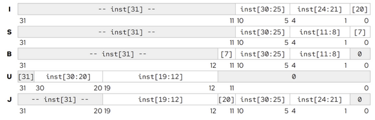
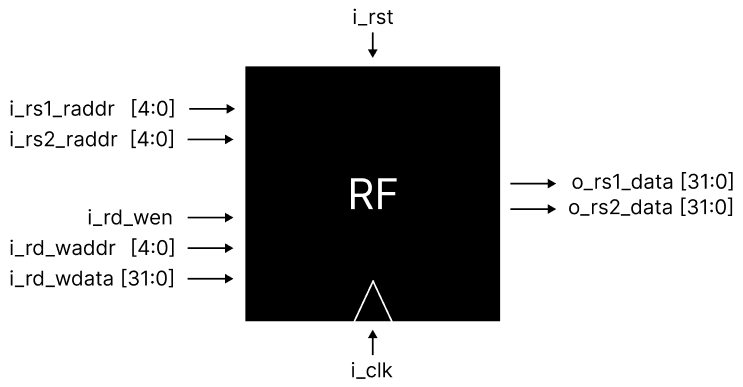
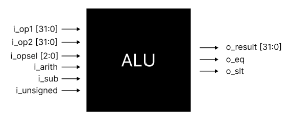

Project 2: Digital Design and Debugging
UW—Madison ECE 552: Fall 2026
Project Introduction
In this project phase, you will refresh your SRAM cells on digital design. You are expected to have prior experience writing and debugging digital systems at the level of ECE/CS 352 for this assignment. Having taken ECE 551 will be an advantage, but keep in mind that you are not allowed to use SystemVerilog.
Solve each digital design problem in Verilog and answer the free-response questions associated with each problem. This assignment should be completed by yourself. You may discuss the problems with other students but must work on your own answers.
Generative artificial intelligence (e.g. ChatGPT) is permitted for this assignment.
You are encouraged to use the Internet to answer the free response questions provided, but please do not share answers online.
This project will be worth 2.5% of your final course grade. All material is available in the Project 2 repository on GitHub. You can clone the repository locally or in a CSL machine.
This project will have an autograded coding component, and some free response questions like in Project 1. Please keep in mind that the autograder on Gradescope is meant for validating submissions, and not for debugging directly. You are encouraged to create and run testbenches for your modules locally, and use Gradescope just as a checkpoint. The final submission before the deadline is the only one that will be used when grading, so please make sure that you have submitted all files.
If there are any issues with Gradescope or the files provided, please post on Piazza rather than emailing. If you are having difficulty with this project, office hours are held several times a week where assistance is available.
Note on Coding Style and Project Management
If you need more practice with Verilog, this verilog practice site may be useful.
This homework is meant to be a crash course for the style of Verilog you will be using in the upcoming project phases. Don't be discouraged if you find this assignment to be difficult at first; the level of coding skill required in the rest of the course does not increase.
What will increase, however, is the level at which you must understand the topics relating to computer architecture, and the level at which you are able to design and reason about complex digital systems.
This course will have a large project with a substantial codebase; staying organized from the beginning is much easier than trying to organize spaghetti code. Manage abstraction carefully; each functional unit should be defined with a clear interface. If something is used more than once, consider defining it as a submodule and instantiating multiple copies. Divide larger problems into smaller problems. Creating testbenches for each functional unit is advisable but not required.
You may complete each of your solutions in the associated starter files, or, if you would like to you may divide each module into submodules and instantiate them in the starter files. Please do not modify the top-level interfaces (input and output signals near the top) provided in rf.v, imm.v and alu.v - the grader will not work correctly. When submitting, make sure to upload all Verilog files in a flat hierarchy without any folders (either just the files, or zipped together in a zip file is fine).
Submissions using SystemVerilog (.sv file extension) will not be accepted (you will receive 0 pts for any file submitted using SystemVerilog). Starting with this project, the Verilog Rules checker is enforced on your submission to ensure designs are synthesizable (synthesis is not a major focus of this class, but writing synthesizable code is important) -- see that page for the specific restrictions (e.g. no *///% operators, no $signed()/$unsigned(), no procedural loops outside generate/genvar). If a submission fails this check, none of its RTL sub-tests can run; fix the reported issue and resubmit. You can run the exact same checker locally before submitting -- ece552 validate -w *.v -- see the starter repository's python-ece552/README.md for setup; this lets you catch a violation before using up a Gradescope submission.
In a future project phase, you will be asked to create a block diagram to represent the data and control paths of a full processor. Consider practicing by creating block diagrams for some of these problems. Sample black box diagrams are included below to get you thinking.
Please also begin searching for project partners for the group project phases. You will only use one of your group members' code for subsequent phases, but everyone must complete this assignment.
Problem 1: Debugging an Immediate Generator
RV32I has multiple different immediate formats that specify different ways to store immediate values in different instructions. In this problem, you will debug a provided immediate decoder to decode these bits depending on the opcode and assemble a 32-bit immediate value. You can find the encodings for each of these formats in the reference card provided on the Reference Materials page of the course website.
For your convenience, the table is also listed here.

Use the provided imm.v interface in the Project 2 repository on GitHub as a starting point. Several bugs have been added to the file that must be identified and fixed.
You can use any simulator that you would like; Icarus will be used for grading, but Modelsim or another is also acceptable. To simulate in Modelsim, use the following steps:
- Create a new project and add
imm.v. - Create a new testbench file
imm_tb.v(the testbenches used for grading this project are not provided, but will be in subsequent phases) and add it to the project. You will want to apply a stimulus (for example, a sample RISCV-32I instruction) and check for the immediate value output to verify that your immediate generator is working correctly. - Compile all files.
- Run the testbench
imm_tbusing Simulate->Run->Run All. - Open the waveform viewer to observe the signals (add signals by right-clicking and selecting "Add Wave").
Answer the free response questions related to this problem (near the bottom of this page) in project2.txt.
Problem 2: Register File
The general-purpose registers in a CPU are typically organized into a unit called a register file. The register file acts as a very small, very high-speed memory (like an SRAM) that can read and write data values each cycle to store temporary data in your program.
`default_nettype none
module rf #(
parameter BYPASS_EN = 0 // change to 1 to enable register file bypass
) (
input wire i_clk,
input wire i_rst,
input wire [ 4:0] i_rs1_raddr,
output wire [31:0] o_rs1_rdata,
input wire [ 4:0] i_rs2_raddr,
output wire [31:0] o_rs2_rdata,
input wire i_rd_wen,
input wire [ 4:0] i_rd_waddr,
input wire [31:0] i_rd_wdata
);
// TODO: Fill in your implementation here.
endmodule
`default_nettype wire
Using the provided rf.v interface above or in the Project 2 repository on GitHub, implement a register file that you'll later use for your RISCV-32I processor. The starter file has detailed documentation on the requirements and interface; please read carefully. At a high level, your register file will:
- Contain 32 (deep) 32-bit (wide) registers, with the lowest indexed register (x0, or zero) hardwired to 0x00000000.
- Be capable of reading two registers per cycle and writing one register per cycle.
- Allow a bypass mode, which when enabled, allows a write to be observed at the read ports in the same cycle it is to be executed (see starter file comments).
- You may also use behavioral
if/elseVerilog for this problem only. Structural, synthesizable loop generation (generate/genvar) is always fine, on this problem and every other. Procedural loops (for,while, etc. inside analwaysblock, outside agenerate) are not permitted -- unroll manually if you're not usinggenerate/genvar.
Here's a quick diagram of your register file ports. Again see the comments (in the version on GitHub) for a more detailed explanation of each of the signals.

Answer the free response questions related to this problem (near the bottom of this page) in project2.txt.
Problem 3: Arithmetic Logic Unit
The core arithmetic functionality of a CPU, including the processor built in this course, is typically carried out in an arithmetic logic unit, or ALU. To implement the RV32I instruction set, the ALU needs to be able to perform basic arithmetic (addition and subtraction), comparisons, bitwise logic (and, or, xor) and bit shifts.
`default_nettype none
module alu (
input wire [ 2:0] i_opsel,
input wire i_sub,
input wire i_unsigned,
input wire i_arith,
input wire [31:0] i_op1,
input wire [31:0] i_op2,
output wire [31:0] o_result,
output wire o_eq,
output wire o_slt
);
// TODO: Fill in your implementation here.
endmodule
`default_nettype wire
Use the provided alu.v interface above or in the Project 2 repository on GitHub as a starting point to design an arithmetic logic unit. While the interface must remain constant for this phase (to ensure compatibility with the grader), how the internal logic is implemented is up to you – and changes to the interface will be possible in future phases. For more information, refer to the lectures or textbook (describes how to implement everything; reading it is the best thing you can do to succeed in this class).
Here's a quick diagram of your ALU ports. Again, see the comments in alu.v for a more detailed explanation of each of the signals.

Answer the free response questions related to this problem (near the bottom of this page) in project2.txt.
Free Response Questions
Answer the following free-response questions in a text file named project2.txt. Use the template below to format your answers. Replace your_name with your actual name and replace answers[0], answers[1], ..., answers[N] with your actual answers to each question.
Submission Template
Author: your_name
[Q0]: answers[0]
[Q1]: answers[1]
...
[QN]: answers[N]
Problem 1
[Q0] Think: What happens if you select the wrong encoding as output? What is the immediate used for in R type instructions?
[Q1] Think: Why do some formats (B-type, J-type) not specify imm[0], instead hardcoding it to zero? What would be the downside of removing this (and specifying all lower bits of the immediate including imm[0])?
[Q2] Research: Some instruction formats have complex immediate encodings; J and U-type formats use a convoluted ordering of bits to construct the immediate while others use continuous bitstrings. Why do you think this is? Look through the ISA reference and the official RISC-V specification on the Reference Materials page for any hints from the designers of RISC-V.
Problem 2
[Q3] Reflect: What should happen when you try to write to x0 (the hardwired zero register)?
[Q4] Reflect: Why is the program counter register not included in the register file?
[Q5] Think: How would you increase or decrease the number of registers in the register file? What else (hint: think about how registers relate to the ISA) would have to be modified to support this change?
Problem 3
[Q6] Reflect: In a future phase, you'll write a processor that implements the RV32I ISA. How will you use these components (register file, immediate decoder, arithmetic logic unit) to do so? What other major components will you need to build?
[Q7] Think: Think about how this project phase and the previous connect to one another. How would you create a hardware multiply instruction and make it available in the ISA?
[Q8] Research: How would you implement instructions that operate on just the upper or lower 16 bits of a word? In other words, can you implement 16-bit instructions in a 32-bit processor? What modifications would you need to make to the register file, immediate encoder, and ALU?
Submission Instructions
Submit the following files to the appropriate Gradescope assignment:
| Deliverable | Points | Notes |
|---|---|---|
imm.v |
15 | Autograded. See problem 1. |
rf.v |
10 | Autograded. See problem 2. |
alu.v |
20 | Autograded. See problem 3. |
| Any other verilog files | N/A | If it is used in your design, include it. |
project2.txt |
15 | Graded manually, after the deadline. Submission Template Author: your_name [Q0]: answers[0] [Q1]: answers[1] ... [QN]: answers[N] |
Filenames must match exactly. Please double check to ensure that you have submitted all of the required files.
Note: Gradescope will only show your score for imm.v/rf.v/alu.v (out of 45) immediately after submitting -- project2.txt's 15 points aren't reflected until it's graded manually.
This project will be worth 2.5% of your final course grade. The results of any manually graded content will be made available after the deadline.